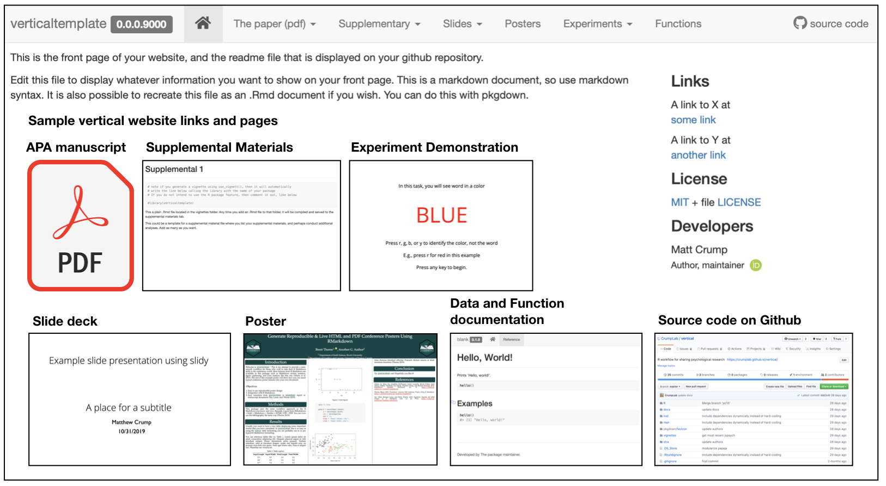
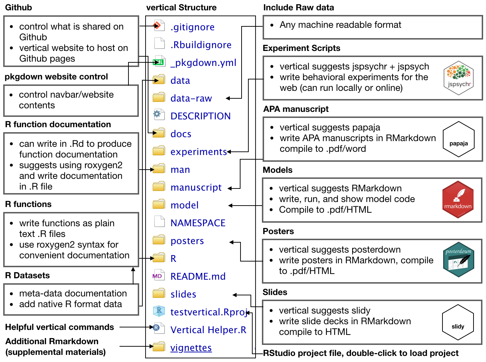
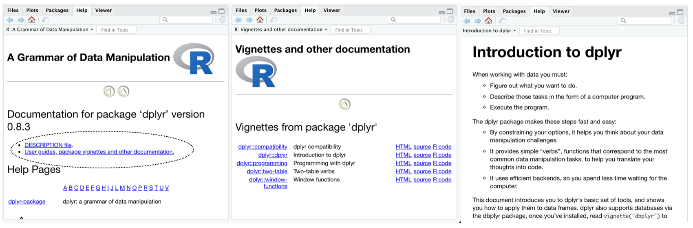

Overview
Motivation
vertical is an R-based structured workflow for creating and sharing research assets in the form of an extended R package. There are several reasons why the R package format is useful for sharing a variety of research assets (from experiment scripts, to papers, slides and posters).
- R packages have a standardized and well-organized file-structure that is useful for organizational purposes.
- Researchers often develop custom functions for analysis, and putting them in an R package makes sharing the functions easy.
- R packages can include data from a research project, and a natural way to document the data using the same schemes for documenting R functions.
- R packages include various documents through the vignettes folder, which in principle could include various formats for communicating research, such as a manuscript or slide deck written in R Markdown.
- R packages can be automatically rendered into websites through
pkgdown, providing a compelling format for sharing research assets.
Vertical combines the benefits of two R ecosystems for creating and sharing research project assets, these include the ecosystems of R Markdown and R packages. So vertical is:
vertical <- RMarkdown + RPackages
R Markdown is a plain text document format that, 1) allows regular text to be combined with chunks of code, and 2) can be compiled to multiple output formats, such as .pdf and webpages (HTML). R Markdown offers a strategy for transparent and reproducible research because analysis scripts along with their output (e.g., results and figures), can be embedded directly in a document. R Markdown has become a large ecosystem and is capable of several forms of document creation, from journal articles, to posters and slide-decks, and much more. In general, if R Markdown is used to create a research asset, it can be included in a vertical project with ease. A comprehensive manual for all things R Markdown (Xie, Allaire, and Grolemund 2018) is available here https://bookdown.org/yihui/rmarkdown/.
R Packages are a standard for creating and sharing libraries of R functions. By default, R packages can also include data and R Markdown documents, so the format is already suitable for packaging common research assets such as functions, data, and manuscripts. R Packages are an ecosystem in that several R Packages exist to facilitate the process of creating and sharing R packages, such as usethis (Wickham and Bryan 2019), pkgdown (Wickham and Hesselberth 2019), and devtools (Wickham, Hester, and Chang 2019). Furthermore, pkgdown provides a method to automatically render an R package into a website that displays function documentation as well as R Markdown documents (typically tutorials for using the package). We refer readers to Wickham (2015) for an authoritative and in-depth guide on creating R packages http://r-pkgs.had.co.nz.
vertical is a template for extending R Packages and pkgdown websites to include additional assets common to psychological research projects. To appreciate the extension consider the basic skeleton for building an R package that is generated by RStudio.

In the minimal example, RStudio is used to create a new project by choosing the R package template. The new project is populated with DESCRIPTION and NAMESPACE files, an R folder to write .R functions, and a man folder to write .Rd files for function documentation. RStudio automatically recognizes the project as an R package, and provides a build tab in the IDE to install the package. A pkgdown website can be built by one command pkgdown::build_site().
vertical workflow
Installing the vertical package adds a new project template to RStudio (RStudio should be restarted after vertical is installed so that it recognizes the template). Users can initiate a new vertical project from RStudio by choosing the vertical project option when creating a new project. By default a vertical project is structured in the following manner:

The new project contains a more complete skeleton of an R package (e.g., folders for data-raw, data, and vignettes), _pkgdown.yml for controlling website parameters when rendered with pkgdown, and additional folders for research project assets such as experiments, manuscript, model, posters, and slides. These additional folders can simply be locations to store final products (e.g., a .zip file for experiment scripts, a .pdf for the manuscript, PowerPoint for the slides, etc.); however, each of these assets can also be created as R Markdown documents. So, by default vertical includes R Markdown templates from other packages within each folder for building each type of content. As a result, vertical suggests using R as a single-platform solution stack for research asset creation.
vertical website
A major impetus behind vertical is to facilitate sharing of research assets. For example, the benefit of using a vertical workflow is that a website presenting all of the research assets can be automatically rendered through pkgdown. For example, the figure below shows a vertical project website, with example page content shown in the boxes.

Once content has been created in each of the folders, or a subset of them, the website can be rendered in one call using vertical::build_vertical().
Depending on the nature of the research project, a vertical website is capable of sharing several assets. At a minimum, the landing page can be used to overview the research project. The navigation bar can be used to download a .pdf of the manuscript, as well as posters and slides. Supplementary materials can be written in R markdown and displayed directly on the website. Similarly, model code and supplementary data analyses can be included directly on the website. If the project includes a browser-based behavioral experiment, in addition to sharing the source code for the experiment, a demonstration of the experiment can be run directly from the website. Finally, because a vertical website is powered by pkgdown, the website provides pages for R functions and data documentation.
Tutorial
Install vertical
vertical requires an installation of devtools
install.packages("devtools")Then, run the following to install vertical.
devtools::install_github("CrumpLab/vertical")The following tutorial on vertical describes the creation of a vertical project, discussion of the vertical workflow for various types of content creation, rendering a vertical project website, and sharing vertical projects on Github and OSF. We attempt simple examples in each case, and refer readers to other guides for more in depth treatment when necessary.
Creating a vertical project
Install vertical, restart RStudio, then follow these steps to initialize a new vertical project. IMPORTANT: when you choose a name it must be a valid R package name. For example, the name must contain letters, numbers, or periods (e.g., my.name), but no periods at the end. This means no spaces, dashes or underscores.

You can also create a vertical project from the console, see the documentation for vertical_project() for more options. This loads the R Project Template window from the console.
vertical::vertical_project()
Default vertical template
By default, a fresh vertical project contains the following files and folder structure:

Building the vertical website
A new vertical project is populated with template examples for every kind of content supported by vertical (e.g., R functions, manuscript, poster, slides, supplementary materials, and even writing a browser-based behavioral experiment with jspsych). As a result, an example vertical website (showing templated content) can be rendered immediately by running the following in the console:
vertical::build_vertical()
The above line should write the HTML files for the website to the docs folder, and the resulting website should appear in a browser window for inspection. NOTE: if you include a papaja manuscript, then you will require a latex installation in order to compile the manuscript to pdf (see, APA papers with papaja).
R Packages
vertical projects can include an R package containing custom functions and data sets. This tutorial presents minimal examples for R package creation, and users interested in this functionality should consult Wickham’s guide for creating R packages http://r-pkgs.had.co.nz.
We suggest that users new to R package development use helper packages such as usethis, pkgdown, devtools, and roxygen2 for managing the process. Wickham’s guide provides in depth tutorials about R package creation using these tools.
R package meta data
vertical runs usethis::create_package() during initialization to create a new R package template. This includes generating a DESCRIPTION file used to provide metadata about the R package. An example DESCRIPTION file is below:
Package: verticaltemplate
Title: What the Package Does (One Line, Title Case)
Version: 0.0.0.9000
Authors@R:
person(given = "Matt",
family = "Crump",
role = c("aut", "cre"),
email = "mcrump@brooklyn.cuny.edu",
comment = c(ORCID = "0000-0002-5612-0090"))
Description: What the package does (one paragraph).
License: MIT + file LICENSE
Encoding: UTF-8
LazyData: true
Suggests:
rmarkdownThe Wickham guide discusses the role of the DESCRIPTION file in depth here: http://r-pkgs.had.co.nz/description.html. It is possible, through usethis, to set up defaults that auto-populate the DESCRIPTION with user information (for example, see usethis setup).
Adding R functions
The following is an example of adding a new function to the R package in a vertical project.
New functions are added as .R files to the R folder. This can be automated by usethis::use_r("myfunction"), which creates a new .R file inside the R folder, in this case with the name myfunction.R.
# replace myfunction with your function name usethis::use_r("myfunction")
In this example, we will write a function that sums the integers between a first and second value. To begin, we decide to name the function sum_range, and create the .R file by running:
usethis::use_r("sum_range")
Next, the function is written in the newly created file sum_range.R. For example, the following is added, starting on line 1:
We will use roxygen2 style commenting to provide documentation for the function. The documentation will be shown in the help menu when the package is installed, allow help for the function to be accessed from the console by ?sum_range, and produce a webpage with the documentation when rendered by pkgdown. The alternative to roxygen2 is to manually write an .Rd file in the man folder for the new function; roxygen2 automates this process and allows the documentation to be added as comments in the .R file defining the function.
Make sure roxygen2 is installed (using RStudio, or install.packages('roxygen2') from the console). RStudio may need to restart to recognize roxygen2. Before proceeding activate roxygen2 documentation in RStudio, under Tools > Project options…, and select the check-box for roxygen documentation:

Next, a template for roxygen2 comments can be automatically generated from within the .R file using the following steps:

A guide for documenting functions with roxygen2 is available here http://r-pkgs.had.co.nz/man.html. In our example, we modify the roxygen2 skeleton like so:
#' Sum of an integer range
#'
#' @param min integer, a starting value
#' @param max integer, an ending value
#'
#' @return integer, the sum of the integers between min and max.
#' @export
#'
#' @examples
#' sum_range(min=1,max=10)
sum_range <- function(min,max){
return(sum(min:max))
}The last step is generate the .Rd file in the man folder, which is used to create the documentation. The .Rd file is generated automatically by devtools::document(), or by the RStudio macro Ctrl/Cmd + Shift + D. For example, a new sum_range.Rd file like the following is saved to the man folder. This should not be edited by hand.

R package compilation
At this stage we have added a new R function to the R package skeleton, but have not yet compiled and installed the R package. The R package can be built and installed in one step by pressing “Install and Restart” from the Build tab in RStudio. After this step, the package is installed on the local system, it will be shown in the list of packages along with constituent function documentation. The functions in the package can be loaded using the library() command.

Relatedly, pkgdown can be used at this point to render the function documentation to the website by pkgdown::build_site().

Adding Data
Arbitrary data can be included in an R Package by placing R data files into a data folder. Importantly, data can be documented just like a function, which allows for clear and descriptive meta-data for the data object. vertical does not create a data folder as a part of its template. This is to encourage useful strategies for data inclusion that automate the creation of the data folder when it is required.
The next example shows individual steps for including data from the R environment. We then discuss strategies for including data as a part of a reproducible research project. Briefly the steps are:
- create a dataframe
-
usethis::use_data()adds .rda todatafolder -
usethis::use_r()adds .R toR/for documentation -
sinew::makeOxygengenerate roxygen documentation skeleton
R objects in the environment can be included as data in an R package. For example, the following generates a simple data frame in the R environment:
mydf <- data.frame(a = 1:5, b = 6:10, c = c("A","B","C","D","E"))
The mydf data frame can be exported to an .Rda file and written to the data folder through usethis:
usethis::use_data(mydf)
The above also creates the data folder if it does not already exist.
Next, documentation for the data is added by including a data.R file in the R folder.
usethis::use_r('data')
Finally, roxygen2 comments are added to data.R to describe the data file. We recommend installing the sinew package which can generate a useful template for documenting R data objects.
library(sinew) makeOxygen(mydf)
For example, the above generates the following template that can be copied copied to data.R.
#' @title DATASET_TITLE
#' @description DATASET_DESCRIPTION
#' @format A data frame with 5 rows and 3 variables:
#' \describe{
#' \item{\code{a}}{integer COLUMN_DESCRIPTION}
#' \item{\code{b}}{integer COLUMN_DESCRIPTION}
#' \item{\code{c}}{integer COLUMN_DESCRIPTION}
#'}
#' @details DETAILS
"mydf"The template is then edited to describe the data object, such as:
#' @title mydf
#' @description example data frame
#' @format A data frame with 5 rows and 3 variables:
#' \describe{
#' \item{\code{a}}{integer some numbers}
#' \item{\code{b}}{integer some more numbers}
#' \item{\code{c}}{character some letters}
#'}
#' @details This dataset is an example.
"mydf"Finally, the .Rd file is generated by devtools::document(), or by the RStudio macro Ctrl/Cmd + Shift + D. When the package is built it will now contain the included data and documentation for the data. The documentation will be added to the website when the site is rebuilt.
Importantly, whenever the package is loaded (e.g., library(verticaltemplate)), the included data becomes available just like the included functions. For example, the following would load the package, then load the included dataset to the environment.
library(verticaltemplate) mydf #loaded into environment from package
Finally, documentation for multiple data objects can be added to a data.R file. Insert a new line after the documentation for the first data object, then insert the roxygen comments for the next one. Or, individual data sets could be documented with individually named .R files. We suggest readers familiarize themselves with sinew, which provides very convenient functions for automating roxygen templates for documenting functions and data sets.
Considerations for sharing data
We have discussed the operations for adding data to an R package. In the context of including data from a research project we have a few additional considerations and suggestions. The overarching issue is how to share your data so that others can easily use it, and understand how you used it.
First, there is a often a difference between raw data and analysis ready data. For example, pre-processing steps may be necessary when loading raw data into a software environment, and may also involve excluding aspects of or imputing new structure to the data. In the spirit of sharing reproducible research it is important to record and make transparent all pre-processing steps.
In principle, the transformations of data along an analysis path can be preserved in a variety of locations, such as in R Markdown documents that contain the scripts for the transformation. vertical suggests that the data-raw folder is used as a location to, 1) store the raw data, 2) declare and conduct pre-processing steps, and 3) save the transformed raw data to the data folder if the intention is to include it in the R package.
To elaborate, vertical creates a data-raw folder as part of the template. This is a location to place raw data in any given format that can be imported to R, such as a .csv file, excel file, JSON file, SPSS file, or other file type. Ideally, the raw data placed here should be machine readable and non-proprietary so that it is shareable. Additionally, the data-raw folder contains DATASET.R, a mostly blank .R script. This script can be populated with the code necessary to import the raw data and transform it as needed to a desired form for further analysis. In other words, DATASET.R is a script that declares pre-processing steps. The script can also include usethis commands and sinew commands to output desired R objects to the data folder, and to write documentation for these objects. One benefit to this strategy is that transformed data (ready-for-analysis), can later be accessed by loading the package as a library. For example, R Markdown assets for writing a manuscript, poster, or slide deck that include data-analysis, can quickly load the data by calling the library.
A second consideration is end-user convenience, or making it easy for people to use the data you are sharing. For example, although the above strategy will make it easy for researchers using R to obtain and use data shared in an R package, this could also make it more difficult for other researchers using different software environments to use the data. Rather than attempting to share multiple formats of your data, another solution is to make a plain text (.txt or .csv) version of the data available, which should be widely readable by most computing environments. For example, a plain text version of the raw data would ideally be stored in the data-raw folder, as this is a non-proprietary format. Similarly, users could also store analysis ready data as plain text (.txt, csv, see https://cran.r-project.org/doc/manuals/r-release/R-exts.html#Data-in-packages) in the data folder. An advantage here is that R users can easily access the data from the command line after the package is loaded, and other users can access the same data in plain text format. Finally, plain text data can be saved to the data folder in a compressed format to save space.
Our primary example of used an R format to save data to the data folder. When using a plain text file type, there are a couple caveats. First, the data must be tabular, and readable in R by the read.table() function. Second, the syntax is slightly different for the resulting R package to pass checks without error. For example, if there was a text file testme.txt containing tabular data in the /data folder, then the following example testme.R file would be placed in the /R folder:
#' @title testme
#' @name testme
#' @description example data frame
#' @format A data frame with 5 rows and 3 variables:
#' \describe{
#' \item{\code{dist}}{integer some numbers}
#' \item{\code{speed}}{integer some more numbers}
#'}
#' @details This dataset is an example.
data(testme, envir=environment())Notice the last line is not simply “testme”, but instead calls the data() function (which uses read.table() to load testme.txt).
APA papers with papaja
The manuscript folder is for writing manuscripts. APA-style manuscripts can be written in R Markdown using the fantastic papaja package (Aust and Barth 2018). The linked to documentation explains how to use papaja, and rather than repeat that information here, we briefly extol some virtues of papaja.
vertical includes a papaja template in the manuscript folder. Knitting manuscript.Rmd in RStudio produces an APA-style manuscript as a .pdf. NOTE, a latex installation is required in order to knit to pdf, and see the papaja documentation for suggestions on installing latex (see also the tinytex R package which may be of some use for navigating latex installation issues). vertical also includes the resulting .pdf in its website as a downloadable file.
There are several benefits to using papaja. First, it is possible to create an entirely reproducible research manuscript. For example, all of the text and R code for data-analysis, modeling, and figure generation, can be included in the .Rmd file. Second, papaja includes many helpful functions (such as apa_print()) for automating the writing of results from an R object (e.g., the results of an ANOVA, t-test, or regression) to the manuscript. Third, papaja uses latex style citations which automatically create bibliographies. Finally, it is possible to export to latex and word documents (which may need some formatting by hand at the end). Finally, papaja also has convenient templates for responding to action letters during the review process.
posterdown and slidy
The posters folder and slides folder are for writing posters and slide decks in R Markdown, which can be included as part of the vertical project website. Furthermore, vertical suggests templates for creating these assets in R Markdown. For example, the posters folder includes a posterdown template (Thorne 2019), and the slides folder includes a slidy template. Both produce browser-displayable content that can be included in the vertical website. The respective links point to documentation for making posters with posterdown and making slide decks with slidy. Additionally, the posters and slides folders can be populated with other templates (by the user) if other packages are preferred for making posters and slides in R markdown.
vignettes: Supplementary materials, model code, and arbitrary R Markdown
Research assets can take many forms beyond a manuscript, poster, or slide deck, and may include stimulus materials, supplementary data analyses, and model simulations. vertical does not suggest folders each of these additional assets, however it does such a strategy for organizing and creating these kinds of assets it the vignettes folder. The strategy is to add R Markdown documents to the vignettes folder and/or add sub-folders for different classes of documents to the vignettes folder, and populate those with R Markdown documents as needed.
The vignettes folder is part of the R package structure, and typically used to include tutorial documentation inside an R package. For example, clicking an R package in the RStudio packages tab will show a link to vignettes if they exist in the package, and they can be read directly in the help window from R studio.

Vignettes are written as R Markdown documents so they can include text and R code chunks and are suitable for communicating a wide variety of supplementary materials, such as additional analyses and model simulations, in a reproducible and transparent manner. By default, pkgdown also knits all of the .Rmd files in the vignettes folder and any sub-folders, and includes them in the pkgdown website under the default “articles” tab. vertical inherits this functionality, but renames the “articles” tab as a “Supplementary” tab. As a result, any .Rmd files in the vignettes folder of a vertical project will be compiled (on vertical::build_vertical()), and added to the vertical website. This is a convenient method for automating the addition of content to the website.
One caveat to using vignettes through pkgdown is that they are all compiled with a consistent look-and-feel imposed by pkgdown, which sets an aim to standardize documentation for R packages (the primary use case for pkgdown). Standard vignette style should be suitable for most users, and we note that it is certainly possible to use custom styles; however, a tutorial on full customization is beyond our scope (but see, further options for customization in the Website customization section.)
experiments: jspsych and jspsychr
Depending on the needs of the research project, it is also possible to create browser-ready behavioral experiments in RStudio. For example, vertical creates an experiments folder that contains a template for building experiments using the jspsych JavaScript library (De Leeuw 2015). Currently, vertical makes two suggestions. First, when a vertical project is created, it downloads the newest version of the jspsych library to the experiments folder. vertical also suggests a jspsychr template. jspsychr is an R package that provides templates and examples for writing jspsych experiments in RStudio, using a combination of R Markdown and JavaScript. The vertical template example includes a basic Stroop task. For example, knitting the index.Rmd file produces the index.html file which can be run in a browser. In this case, because the experiment file is also an HTML file, it is possible to include a demonstration of running the experiment in the vertical website.
Website customization overview
vertical is a minor extension to the pkgdown approach for rendering R package websites from an R package file structure. pkgdown places constraints on the websites it generates (around the style of content presentation), and these constraints are inherited in vertical websites. Some examples of current constraints are:
R Markdown documents placed in the vignettes folder are rendered in a style dictated by
pkgdown. This allows consistent style across R package vignettes, and vertical inherits this style for any .Rmds in the vignettes folder.The website contains a sidebar with information about “developers”, as developers is a good name for authors of R packages. Unfortunately, this descriptor is hard-coded by pkgdown, so the html file would need to be edited by hand to include a different descriptor.
The benefits of adopting the pkgdown framework are that websites can be compiled in one command and are produced with consistent structure. In our view, the additions that vertical makes are reasonable add-ons to that structure. It is worth pointing out that all of the constraints imposed by pkgdown can be escaped by building a custom R markdown website, however vertical does not provide direction for that option.
Although pkgdown has constraints it is also fairly flexible. By default, pkgdown creates a simple website with a landing page (to describe the package), an articles tab to display vignettes, and a reference tab to display function documentation. For an in-depth guide to customizing pkgdown websites, see the pkgdown documentation. vertical extends the basic website by modifying the tabs in the navigation bar, and pointing them to assets in vertical, such as those contained in manuscript, slides, posters, etc.
Before describing some examples of customizing a vertical website, it may be helpful to provide an overview of the website building process. An advantage of the pkgdown/vertical approach is that users can produce a website for their project without expertise in coding for the web. The disadvantage is that general knowledge about web coding is useful for customizing the website directly, and customizing through pkgdown options.
Under the hood, pkgdown renders R Package assets in the form of HTML documents and exports them to the docs folder. The docs folder is included both as a location to store the web files, and with Github pages integration in mind. As we describe in the next section, Github repositories containing a docs folder can serve any content in docs folder to the web at large. We note here that the website files in the docs could be copied to any web server for hosting the website.
A pkgdown website is simply the collection of files in the docs folder. For example, pkgdown creates an index.html file containing the HTML necessary to show the landing page on the website. When a browser arrives at a URL location on the web (e.g., such as https://crumplab.github.io/vertical) it automatically attempts to load the ‘index.html’ file (e.g., the browser interprets https://crumplab.github.io/vertical as https://crumplab.github.io/vertical/index.html). An inspection of the docs folder will show several other files and folders, typically these are .html files for individual pages on the website. However, even files that are not .html files can be included for download from the website. For example, manuscript/manuscript.pdf is a pdf in the manuscript folder that can be downloaded from the website.
It is worth realizing that any file in docs could be accessed and downloaded by a browser, even if the website does not provide a link to it. In the template, vertical assumes that users would want to share manuscript.pdf, so a tab in the website navigation bar is created such that clicking the tab initiates a download of the file. The manuscript folder also contains manuscript.tex, which is a latex version of the manuscript; however, vertical does not by default create a link on the website to this file. Nevertheless, if someone accessed the appropriate URL specifying the path to the file on the server (e.g., https://site.com/projectname/manuscript/manuscript.tex), then file would be downloaded. We mention these features of the docs folder to foster general intuitions about customizing the website, these are:
- Anything in the
docsfolder can be served to the web - Some link should be added somewhere to a
verticalwebsite to connect to the content. - Any manual edits to the .html files in a
docsfolder will change the resulting website. Manual edits may need to be redone if the site rebuilt (resulting in overwriting the previous HTML) at a future point in time.
One final point about pkgdown is how it handles vignettes. Vignettes are simple R Markdown documents in the vignettes folder. A vignette can be knitted in R Studio, and the result is an .html file rendered to the vignettes folder. This .html file is not served to the web because it is not in the docs folder. Moreover, this .html file displays the vignette as a basic, standalone webpage, that is not embedded into the pkgdown website. For example, the navigation bar for the website is not included. This process is different from using pkgdown::build_site(), which renders the .Rmd files in vignettes to the docs folder, and in the process adds the overarching website html to each vignette so that they include website features such as the navigation bar.
We mention the above issues to expose the process of including additional content to the website. vertical takes care of some of the additions automatically through vertical::build_vertical(). For example, vertical::build_vertical() compiles .Rmd files in the manuscript, posters, and slides folders, exports the assets to the docs folder, and adds links to the content in the navbar. Presently, there is limited functionality in vertical for automating the inclusion of arbitrary content in arbitrary folders. For example, if a user created a blog folder containing an R markdown that rendered to HTML in a particular style, it would not be included by default. Importantly, such arbitrary content can be included manually, with the caveat that aspects of the vertical website may not be included. For example, the blog page could be linked to from the navigation bar, but clicking the link would display the single page as is, and without the vertical website structure (e.g., the navigation bar would be missing).
Website customization
The _pkgdown.yml file is used to customize many aspects of the website. The vertical template creates _pkgdown.yml which defines the appearance and order of navigation tabs and how they link to vertical assets. By default, vertical::build_vertical() automatically updates _pkgdown.yml to include tabs and menu items in each tab for the following vertical assets: manuscript, posters, slides, and vignettes. Specifically, the titles of .Rmd documents in those folders are added as menu items to their respective tabs. If the vignettes folder contains sub folders, then the name of the sub-folder is used as section header in the “Supplementary” tab, and the title of .Rmds in each sub-folder are listed as menu items under their respective sections.
Below is example yml for controlling the navigation tabs. The structure section defines the ordering and placement of tabs in the navbar. For example, home, manuscript, articles, slides, posters, experiments, and reference tabs are all left-aligned, and the source code link to Github is right aligned. Switching the order of the component listed under structure will change the order of the tab in the navbar.
Next is the list of components, which form individual tabs. The name of the component does not need to be the same as the text displayed in the tab. For example the manuscript component specifies its text attribute as “APA6 PDF”, which is the text shown in the manuscript tab.
navbar:
structure:
left:
- home
- manuscript
- articles
- slides
- posters
- experiments
- reference
right: github
components:
home:
icon: fa-home fa-lg
href: index.html
manuscript:
text: Manuscript
menu:
- text: APA6 PDF
href: manuscript/manuscript.pdf
articles:
text: Supplementary
menu:
- text: Getting Started
href: articles/Supplemental_1.html
slides:
text: Slides
menu:
- text: R Markdown slides
href: slides/slides.html
posters:
text: Posters
menu:
- text: Conference 2019
href: posters/poster.html
experiments:
text: Experiments
menu:
- text: Experiment 1
href: experiments/experiment-1/index.html
reference:
text: Functions
href: reference/index.html
github:
text: source code
icon: fa-lg fa-github
href: https://github.com/CrumpLab/vertical_templateOf special note is the articles component, which appears as a tab named “Supplementary”. Any .Rmds in the vignettes folder are linked under this tab. The order and appearance of the links in the tab can be edited for clarity. For example, imagine vignettes folder had two sub-folders, analyses, and model, that included .Rmds for different analyses and model simulations. The above yml could be modified to structure the ordering and sectioning of items in the tab like so:
articles:
text: Supplementary
menu:
- text: Additional Analyses
- text: Experiment 1
href: articles/analyses/data_1.html
- text: Experiment 2
href: articles/analyses/data_2.html
- text: Model simulations
- text: Simulation 1
href: articles/model/sim_1.html
- text: Simulation 2
href: articles/model/sim_2.htmlA new tab with any name can be added to the website by adding a new component to the yml file. At a minimum, the new component should specify a text attribute, which will be the name of the tab, and an href attribute, which refers to the location of the linked asset.
Last, the home portion of the yml controls information displayed on the right side bar of the landing page. For example, links could be replaced with links to an OSF repository, or a journal website with a published version of a paper.
home:
strip_header: true
links:
- text: A link to X
href: some link
- text: A link to Y
href: another link
Authors:
- text: Author 1
- text: Author 2Licenses and Citations
Part of sharing your work can involve deciding how you want to license use of your work, as well aiding others ability to credit your own through citations. Because vertical projects are extended R packages, it is possible to use licensing and citation tools built for R packages.
A full discussion of licensing issues, and how to choose which license is best for you is beyond the scope of this tutorial. Suffice it to say there are at least two ways to invoke licenses for your vertical project. The first way is to define include a license file in the pacakge, and define the license in the DESCRIPTION file. The usethis package provides some convenient functions for adding common licenses to an R package or a vertical project. For example, usethis::use_mit_license() adds the mit license file to your project, and identifies that license correctly in the DESCRIPTION file. usethis has similar helper functions for several other licenses. A second way is to choose a license with github. If your vertical project is on github, then on github choose create new file and begin typing “license” into the name for the file. You should see a pop-up button that allows you to choose from different license options. Note, if you do not declare the license in the DESCRIPTION file, then it won’t be reflected on the vertical website compiled by pkgdown.
R packages also have a convenient citation() function. Calling this function and including the name of an R package will print citation information to the console. By default, a vertical project containing an R package with a correctly specified DESCRIPTION file will be compatible with the citation function. Specifically, running citation('yourpackagename') should generate a reference and bibtex entry from the information in the DESCRIPTION file. It is also possible to include a custom CITATION file in the /inst folder. Here additional customization can be included, and any citation information in this file will take precedence. Guidelines for creating and using the CITATION file are available here http://r-pkgs.had.co.nz/inst.html.
References
Aust, Frederik, and Marius Barth. 2018. papaja: Create APA Manuscripts with R Markdown. https://github.com/crsh/papaja.
De Leeuw, Joshua R. 2015. “JsPsych: A Javascript Library for Creating Behavioral Experiments in a Web Browser.” Behavior Research Methods 47 (1): 1–12.
Thorne, W. Brent. 2019. Posterdown: An R Package Built to Generate Reproducible Conference Posters for the Academic and Professional World Where Powerpoint and Pages Just Won’t Cut It. https://github.com/brentthorne/posterdown.
Wickham, Hadley. 2015. R Packages: Organize, Test, Document, and Share Your Code. "O’Reilly Media, Inc.". http://r-pkgs.had.co.nz/.
Wickham, Hadley, and Jennifer Bryan. 2019. Usethis: Automate Package and Project Setup. https://CRAN.R-project.org/package=usethis.
Wickham, Hadley, and Jay Hesselberth. 2019. Pkgdown: Make Static Html Documentation for a Package. https://CRAN.R-project.org/package=pkgdown.
Wickham, Hadley, Jim Hester, and Winston Chang. 2019. Devtools: Tools to Make Developing R Packages Easier. https://CRAN.R-project.org/package=devtools.
Xie, Yihui, J. J. Allaire, and Garrett Grolemund. 2018. R Markdown: The Definitive Guide. Boca Raton, Florida: Chapman; Hall/CRC. https://bookdown.org/yihui/rmarkdown.